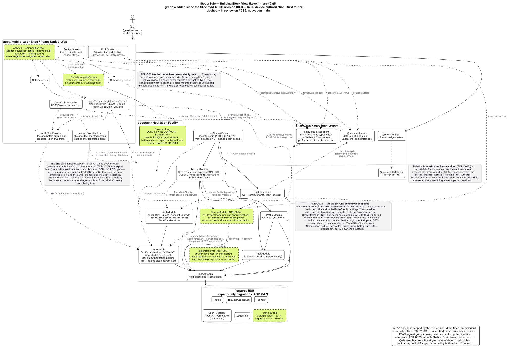
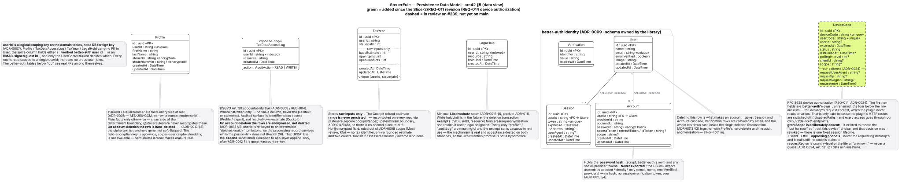
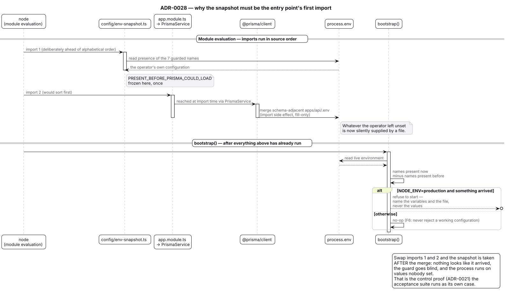

Which document is authoritative. The system overview is
docs/index.html: context, building blocks, runtime, deployment, concepts, risks. This document keeps what that one does not go into: the build and quality toolchain (§8) and the boot-ordering invariant (§8.1). §5 and §5.1 below describe the system as it stood at REQ-014 (nine tables, a handful of modules). They are kept as a record of that slice and are not maintained against today's code; for the current structure readindex.html§5 andsubsystems.html.
The living architecture document for the SteuerEule engineering build, kept as docs-as-code alongside the engineering ADR log. It is as important as the software: a stale arc42 is treated the way we treat a failing test, and every completed task that moves the architecture moves this document (text and diagrams) in the same breath.
This is a proportionate arc42 — it covers the views the system actually needs today, done well and extensible later, rather than a hollow 12-section skeleton. Sections are added when a change first touches them; the full arc42 template remains the reference for the sections not yet populated.
Decisions live in the ADRs (this document shows the structure; the ADRs justify it and are the source of record). Product/design decisions are cross-referenced into the product ADR log rather than duplicated.
Diagrams — how they're maintained
Every diagram is authored as PlantUML and the .puml text source is committed
(diffable, reviewable) next to the doc; the exported .svg is committed too and the
prose references the SVG so it renders everywhere. Regenerate after any edit:
./scripts/docs/render-diagrams.sh # needs `plantuml` and Graphviz (`dot`) on the PATH
The script renders every .puml under docs/arc42/, docs/adr/ and docs/diagrams/ twice: <name>.svg in the
light theme and <name>.dark.svg in the app's dark theme. Every source includes
../diagram-style.puml, which sets fonts, lines and colours from the app's design tokens
(packages/tokens/dist/tokens.css). The documents embed both files in a <picture> element, so a reader sees
the one that fits their light or dark setting. The Ports & Adapters picture (images/architecture-hexagon.svg)
is drawn by hand with the same tokens and carries both themes in one file.
The pages themselves. The documentation is the HTML pages under docs/, edited by hand
(ADR-0116): the architecture as docs/index.html and one page per
chapter, each ADR and each other document as one page. docs/assets/site.css carries the look; its first
block is a copy of packages/tokens/dist/tokens.css. The pages follow the reader's light or dark setting and
need no server. adr-check and register-check read the pages through
scripts/checks/lib/html-doc.mjs.
| View | Source | Rendered |
|---|---|---|
| §5 Building block view | building-block-view.puml |
building-block-view.svg |
| §5 Data model (data view) | data-model.puml |
data-model.svg |
| §8.1 Boot ordering | ../adr/0028-boot-env-snapshot-ordering.puml |
../adr/0028-boot-env-snapshot-ordering.svg |


§8's toolchain half is prose-only by design: it describes a toolchain, not a structure, and a diagram of "which tools run in which order" would only restate the CI workflow file that already says it. That sentence used to cover all of §8; §8.1 is the exception it now takes, because boot ordering is a structure — an invariant about which module is evaluated before which — and it is exactly the kind of thing prose describes badly. The diagram lives with ADR-0028 rather than being duplicated here, and is referenced from both.
5. Building block view
Level-1 whitebox of the running system: the two apps, the shared monorepo packages, the API's internal modules, and the EU Postgres database. Green blocks were added since this view's previous revision (Slice 2's auth stack and REQ-011's DSGVO export/deletion): REQ-014's QR device authorization (ADR-0024) and the app's first real router (ADR-0023).
Dashed blocks are in review on steuereule#239 and are not yet on main. The same marker
carried DatenschutzScreen through steuereule#153 and came off when that slice merged — the
map may show what is coming, but only for as long as it says so. When #239 merges, the dashes
come off these five blocks.

Frontend — apps/mobile-web (Expo / React-Native-Web). Screen-by-screen takeover
(ADR-0005, walking skeleton), now: Splash → Login/Registrierung → Onboarding → the tabbed
shell (Cockpit, Profil), with Datenschutz as a drill-down reached from Profil.
App.tsx— the composition root, and now the app's first real router (ADR-0023):@react-navigation/native+ native-stack with alinkingconfig, replacing what was auseState<Stage>union. It is the one file permitted to import@react-navigation/*. Screens stay prop-driven — a screen never imports the router, never calls a navigation hook, never imports a navigation type. That constraint is not stylistic: it is what holds the test blast radius at 1 file instead of 15, and it is enforced at review.GeraetefreigabeScreen— the QR approval surface (REQ-014). It does not ask "Approve?"; it asks whether the code shown is the one on your screen, next to the requesting browser, OS, region and time, and carries a standing statement that a code received by message is never approved here. That statement is a control, not reassurance: approving a code someone else claimed installs their session on your desktop — session fixation, not account takeover.LoginScreenadditionally carries the open QR column (QrMark, the brand mark static inside the QR pattern's own centre, per the Funke DS's dedicated reference — #283 dropped the earlier animatedOwlMarkentrance once that reference existed); the code is minted on page load, which is a deliberate trade recorded in ADR-0024. Its own mint/poll failures classify asunreachable/server/rate-limitedand drive a bounded, backing-off auto-retry — never on the rate-limited case, which is ADR-0024's own brake, not a bug to route around.ProfilScreenadditionally carries the device list with per-entry revocation, and is the second consumer of the resolved region.CockpitScreen— hero refund-estimate card plus honest loading/empty/error states; reads the generated hook and formats the range with@steuereule/core.ProfilScreen— the stored profile, viewed and edited against the liveGET/PUT /v1/profile(REQ-013). Nothing sensitive is written to client storage (ADR-0008).DatenschutzScreen— the user-facing half of REQ-011: DSGVO export (JSON + PDF) and account deletion with the pre-delete export offer, the Löschschutz warning, and fresh-auth re-verification (400/401/429/403 each a distinct, honest state) as real UI paths. On a successful deletion it clears both caches that could outlive the account — TanStack Query's, and better-auth's own session atom — so "signed out" is a state the code produces, not one that happens to follow.exportDownload.ts— the one sanctioned egress outside the generated client, drawn on the map rather than left inside the screen. See the api-client bullet below for why it exists; it is on the diagram because an undrawn second egress is how "one call site" quietly stops being true.AuthClientProvider— the one better-auth client construction site (mirrors the api-client's "one fetch call site" rule): session reads, sign-in/up/out, guest upgrade. A screen asking "is this a guest or an account?" asks this, so the answer is the same one the server would give.
Shared packages.
@steuereule/core— the deterministic domain: the single home of the shape validators (isValidSteuerId/isValidSteuernummer) and the Cockpit range rule (cockpitRange). Imported by both frontend and API; there is no second copy of these rules (the determinism boundary, ADR-014/048).@steuereule/api-client— the orval-generated typed client + TanStack Query hooks, generated fromapps/api/openapi.json(ADR-0001). Four generated targets: profile, cockpit, auth (capabilities) and account (export/deletion). The one fetch call site is itshttpClientmutator, with exactly one documented exception: the export download (exportDownload.ts). The export body is aContent-Disposition: attachment— JSON or PDF bytes — and the mutator unconditionallyJSON.parses, which throws on a PDF; a query hook's cache semantics are also the wrong shape for a one-off download. The exception reuses the same configured origin and the samecredentials: 'include'discipline, so what it bypasses is the JSON envelope, not the transport policy.@steuereule/ui/@steuereule/tokens— the Funke design system and its design tokens.
Backend — apps/api (NestJS on Fastify).
- better-auth (ADR-0009, supersedes ADR-0007's Keycloak) — mounted as a Fastify
catch-all on
/api/auth/*, outside Nest but behind the same trust seam: it is the auth server, not a second identity authority. UserContextGuard— still the one place a request'suserIdis established (ADR-0007, refined by ADR-0012): a verified better-auth session or an HMAC-signed guest cookie, never a client-supplied identity. Every/v1module scopes through it.AuthModule— capabilities endpoint (is Google actually configured?), the atomic guest→account upgrade (ADR-0012 §4), theFreshAuthCheckerused by destructive actions, the breached-password check (REQ-010), and theEmailSenderseam.DeviceModule(new) —/v1/device/{code,pending,approve,token}(ADR-0024). better-auth'sdevice-authorizationplugin implements RFC 8628, but its HTTP routes are switched off (disabledPaths) and only server-sideauth.api.*calls reach it. Two of its behaviours force that seam:/device/tokenreturns a Bearer token in JSON and never sets a cookie (ADR-0008/0012 forbid holding one in JS-reachable storage), andGET /deviceclaims a code for the caller's account while the origin check skips allGETs — reachable cross-site under ourSameSite=Nonecookie. Same shape as theUserContextGuardseam: better-auth is the mechanism, our API owns the surface. Because/device/tokensets no cookie, a better-auth plugin (device-session-cookie.ts) adds anafter-hook that calls better-auth's ownsetSessionCookie— no re-implemented signed-cookie format — and the acceptance test round-trips the result through a real better-auth instance.RegionResolver(new) — country-level geo-IP (ADR-0024), self-hosted in our EU deployment, fetched at build time and pinned by checksum; no user IP ever leaves our infrastructure. It never guesses: a private/unroutable address, an unlisted block, or a database past its refresh interval all resolve tounknown, rendered as "Region unbekannt". One resolver, two consumers — the approval screen and the device list — so the fallback cannot come to mean two different things on two screens. Country granularity is deliberate data minimisation (Art. 5(1)(c)).ProfileModule—GET/PUT /v1/profile.CockpitModule—GET /v1/steuerjahre/{jahr}/cockpit. Controller (guarded,jahrbounds-validated) →CockpitService→TaxYearRepositoryseam. The service reads the rawTaxYearinputs and computes the estimate range via@steuereule/core'scockpitRange()— the range is never recomputed locally or persisted.AccountModule(new) — the DSGVO surface (ADR-0013):GET /v1/account/exportassembles the export once and renders it two ways (Art. 20 JSON, human-readable PDF-Bericht through thePdfRendererseam), reusingProfileRepositoryso there is one decrypt path;DELETE /v1/accountruns the teardown as a single Prisma$transaction— hard-deleteProfile, anonymise the audit rows to an irreversible tombstone, delete the better-authUser(Session/Account cascade), exempting anything under an activeLegalHold. All-or-nothing: no partial teardown is ever observable.AuditModule— the append-onlyTaxDataAccessLog(DSGVO Art. 30; the audited surface is identifier-class access, not read-of-own-estimate — see §Data model).PrismaModule— the shared, field-encryption-extended Prisma client (ADR-0008).- Cross-cutting — the fail-closed CORS origin allowlist (ADR-0011; never
*, credentialed cross-origin withSameSite=None; Secure),helmet/CSP, and rate limiting (@nestjs/throttlerfor the device/verify-password routes, better-auth's built-in limiter for its own). Both key on the client address Fastify resolves from the socket peer andTRUSTED_PROXIES, which the server writes into an internal header before any route runs; a client-suppliedX-Forwarded-Forno longer buys a fresh bucket (ADR-0106 D3, closing #241's single-value bypass in code). Sign-in is also limited per account, and guest writes per address (ADR-0106 D8/D9). The limiter storage is in-memory per pod, or Redis withREDIS_URL(ADR-0035).
Persistence — Postgres (EU), expand-only versioned migrations (ADR-047). Nine tables:
four userId-scoped domain tables, the four better-auth identity tables, and
DeviceCode (see the data model).
Which decisions these blocks trace to
REQ-001 (Cockpit) introduced no new ADR-level decision — it was a straight application of already-adopted patterns, and that remains true. The blocks added since then are not: they implement decisions that were escalated and recorded first — ADR-0009 (better-auth as the auth server), ADR-0012 (guard/guest coexistence and the atomic upgrade), ADR-0011 (credentialed cross-origin), ADR-0010 (CI as the real gate), and ADR-0013 (DSGVO export/deletion, including the two stakeholder rulings: anonymise-and-retain over hard-deleting the audit log, and JSON and PDF rather than either alone). This view shows the structure; those ADRs justify it and stay the source of record.
5.1 Data model (data view)
The persisted schema (apps/api/prisma/schema.prisma). Green = added since the REQ-001
revision: the better-auth identity tables (Slice 2) and LegalHold
(REQ-011's Löschschutz seam).

userIdis a logical scoping key on the domain tables, not a DB foreign key (ADR-0007).Profile/TaxDataAccessLog/TaxYear/LegalHoldcarry no FK toUser: the same column holds either a verified better-auth user id or an HMAC-signed guest id, and only theUserContextGuarddecides which. Every row is read scoped to a singleuserId; there are no cross-user joins. Correction (this revision): the previous text said "there is noUsertable". That stopped being true when better-auth landed (ADR-0009/0012) — there is one, with real FKs among the identity tables. What survived the change is the absence of a foreign key from the domain tables to it, which is the property the guest/account seam actually depends on.Profile— plain onboarding facts;steuerId/steuernummerare field-encrypted at rest (ADR-0008, AES-256-GCM, per-write nonce,mode=strict). Hard-deleted on account deletion (ADR-0013 §2): the app-wide encryption key makes per-user crypto-shredding impossible, so hard-delete is what makes erasure genuine.TaxDataAccessLog— append-only who/what/when trail, no value column (ADR-0008 / REQ-004). On account deletion the rows are anonymised, not deleted (ADR-0013 §1): theuserIdis re-keyed to an irreversible tombstone, keeping the Art. 30 processing record while severing the person-link (Recital 26). That UPDATE is the second sanctioned structural exception to app-layer append-only, after ADR-0012 §4's guest re-key — any future DB-level append-only enforcement must whitelist both.LegalHold— the minimal Löschschutz seam (ADR-0013 §5): whileholdUntilis in the future, the deletion transaction exempts that(userId, resource)and retains it under legal obligation. The exempt set is vacuous in real use today (no filing model persists yet), but the mechanism is real and acceptance-tested on both branches — which is what makes the UI's retention wording an honest statement rather than a hypothetical.User/Session/Account/Verification— better-auth's own schema (ADR-0009), the only place with real foreign keys (Session/Accountcascade offUser).Accountholds the scrypt password hash and any social-provider tokens and is never exported: the DSGVO export carries account identity only — email, name,emailVerified, providers — and no secret of any kind (ADR-0013 §4).RateLimit— DB-backed on purpose (REQ-010 / ADR-0012 §5): an in-memory counter resets per pod and is trivially bypassed once the API scales horizontally. Reused, not re-invented, by the deletion path's password re-verification limit.TaxYear— raw inputs only (baseEstimate/openItems/openConflicts), unique per(userId, steuerjahr). The refund-estimate range is never persisted — recomputed per read viacockpitRange(), so there is no second place to drift. No@encryptedfield: ruled out of ADR-0008 scope in review — it holds no tax identifier, only a rounded estimate and two counts. Revisit if assessed amounts or income figures ever land on this entity.
8. Crosscutting concepts — the build & quality toolchain
Added because ADR-0019 is the first change to touch this layer. It records what the tools are
and what each one is trusted to prove; the human gates (refinement, review, risk-tiered test)
live in docs/process/delivery-pipeline.html and are deliberately
not duplicated here.
The governing principle is ADR-0010's: a gate counts only when it runs in CI against the real thing. A check that runs only on a developer's machine is evidence, not a guarantee.
| Layer | Tool | What it is trusted to prove | Where it is real |
|---|---|---|---|
| Types | tsc --noEmit, TS 7.0.2, strict + noUncheckedIndexedAccess + exactOptionalPropertyTypes |
Type correctness across the workspace. Carries the type-aware load that the linter deliberately does not (ADR-0019 §4). | CI test job |
| Static lint | oxlint (ADR-0019) | Syntactic/semantic defect classes tsc does not cover — notably unused bindings (noUnusedLocals is not enabled) and shadowing across the Playwright page.evaluate serialisation boundary. |
CI lint job |
| Architecture boundaries | Vitest: apps/api/test/architecture.test.ts, packages/core/src/architecture.test.ts (ADR-0102) |
Ports & Adapters: the database client and each external SDK are imported only by the files named for them; the set of module → module imports matches a baseline; the core has no new import direction and no value-import cycle between files. The proof that the check can fail is inside the test: twelve constructed violations. | CI test job |
| Unit / pure logic | Vitest | Behaviour of pure logic, no DB. | CI test job |
| Compliance | Vitest against real Postgres | REQ-003 field encryption at rest, REQ-004 append-only audit, REQ-005/006/009/010/011 acceptance. Never a mock (ADR-0010). | CI integration job |
| Boot | compiled dist/ over real HTTP |
Wiring bugs that .inject() is structurally blind to. |
CI smoke job |
| Browser CORS | headless Chromium, two real origins | Credentialed cross-origin behaviour no curl or Node fetch() can enforce. |
CI e2e: gates — account-and-session |
| Real-browser layout | headless Chromium, real viewports (s/m/l) | ADR-0014 breakpoint maxWidth resolution and the DS's .fk-btn { width: 100% } contract — jsdom performs no layout, so this is unprovable at the unit layer. |
CI e2e: gates — account-and-session |
The jobs live in two workflows: lint, test and integration in Quality (quality.yml), smoke and the browser gate groups (e2e: gates — <group>, listed in e2e/gates.json, ADR-0112) in Build & E2E (ci.yml).
Why the linter has its own parser
typescript-eslint is coupled to the TypeScript compiler API, which made the linter a hostage
to this repo's deliberate TS 7 pin — it threw at module load and the repo went its whole life
without a working static-lint gate. oxlint carries its own parser, so the same coupling cannot
recur. The lesson generalises: when a tool conflicts with the language version, decouple the tool
from the compiler API rather than downgrade the language (ADR-0019, Alternatives).
Type-aware linting is deferred, not surrendered — oxlint-tsgolint is built on typescript-go
(TS 7's own engine) and was proven to work here; it is a separate cost decision (ADR-0019 §4).
A gate must be provably real
The lint job was, until ADR-0019, wired into needs: [lint, test, integration] while running
echo "TODO" — it blocked the pipeline while checking nothing and passed in ~3s on every run. A
gate carrying authority without content is worse than no gate, because it reports a safety it never
established.
The standing consequence: every gate here must be demonstrated failing. The evidence for a gate is a link to a CI run that went red on a deliberately introduced defect and skipped its dependants — not a green run, and not a local one.
The lint job is real: quality.yml runs pnpm lint, which is oxlint --deny-warnings.
8.1 Boot ordering — a structural invariant in apps/api/src/main.ts
Added because ADR-0028 is the first decision to make module-evaluation order load-bearing. This is the one place in the system where the order of two import statements is an architectural constraint, so it belongs on the map rather than only in the file that happens to contain it.

(source: 0028-boot-env-snapshot-ordering.puml)
The constraint: main.ts imports ./config/env-snapshot.js first, deliberately ahead of its
otherwise-alphabetical order. ./app.module.js would sort first and reaches @prisma/client at
import time, whose generated client merges the schema-adjacent apps/api/.env into process.env as
a side effect. Once that has run, "what the operator actually supplied" is unrecoverable from inside
the process.
What is and is not enforced, stated plainly:
| Status | |
|---|---|
| A lint rule preventing a re-sort | None. .oxlintrc.json has no import-sort rule today. If one is ever adopted it needs an exception for this line. |
| A test that goes red when the order breaks | Yes, apps/api/test/boot/assert-env-not-file-sourced.test.ts — the acceptance case's own refusal disappears, and a derived ordering-broken entry point proves it (ADR-0021 control proof). Scope: it spawns tsx src/main.ts, never dist/. |
The invariant holding in the compiled dist/ |
Observed on the code path, not controlled, and never in the image. Rows 1 and 2 were reproduced against node --import tsx dist/main.js — the CMD in apps/api/Dockerfile — on Node 24 with @prisma/client 6.19.3 against real Postgres at ff633a3 (Salih's #310 run): the refusal fired and named the guarded vars, and the no-op case booted through to a real GET /v1/profile → 200. That run was made outside any container, against a fresh tsc build — not against the built production image, which a registry/blob-CDN block prevents building in this environment (the same block behind e2e/harness/README.md's native-Postgres fallback). The emitted order was re-checked at 71074c6: tsc puts import './config/env-snapshot.js' first in dist/main.js and emits dist/config/env-snapshot.js, so it neither reorders nor elides. |
The gap that remains, stated as narrowly as it now is. The invariant has been seen to hold on the code path production runs — that is more than the earlier "by construction, untested" wording admitted, and this row is corrected here because that wording became false the day #310 merged. Three things are still missing, and they are different sizes:
- The control proof at that layer. Row 4 has never been run against
dist/, so nothing has been observed going red there. By ADR-0021's own standard a control is established only once it has been seen to fail, so the compiled path carries evidence, not a gate. - A checked-in test. Both measurements above are one-off manual runs at named commits.
apps/api/test/boot/support/run-server.ts'sentryPathdefaults tosrc/main.tsand no fixture points atdist/. - This invariant inside the image. The image is built and booted in CI —
prod-deploy-smoke(.github/workflows/ci.yml, "Production compose stack … (real Docker build)") — but that job asserts guest/registration/login/QR, not the env-source guard. So the image is exercised and this invariant is exercised, never in the same run.
Recorded here rather than in a comment because a reader of this document should find it without reading the entry point — and stated at this length because the failure mode being guarded against is precisely a limit that drops out of the write-up and reads as coverage.